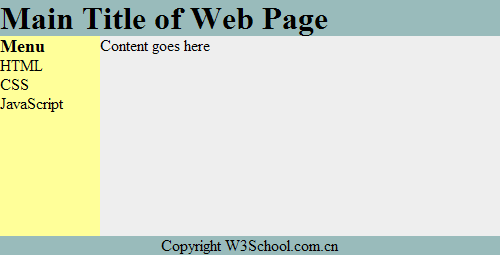

HTML 布局
网站布局
大多数网站会把内容安排到多个列中（就像杂志或报纸那样）。
可以使用 <div> 或者 <table> 元素来创建多列。CSS 用于对元素进行定位，或者为页面创建背景以及色彩丰富的外观。
提示：即使可以使用 HTML 表格来创建漂亮的布局，但设计表格的目的是呈现表格化数据 - 表格不是布局工具！
HTML 布局 - 使用 <div> 元素
div 元素是用于分组 HTML 元素的块级元素。
下面的例子使用五个 div 元素来创建多列布局：
实例
<!DOCTYPE html>
<html>
<head>
<style type="text/css">
div#container{width:500px}
div#header {background-color:#99bbbb;}
div#menu {background-color:#ffff99; height:200px; width:100px; float:left;}
div#content {background-color:#EEEEEE; height:200px; width:400px; float:left;}
div#footer {background-color:#99bbbb; clear:both; text-align:center;}
h1 {margin-bottom:0;}
h2 {margin-bottom:0; font-size:14px;}
ul {margin:0;}
li {list-style:none;}
</style>
</head>
<body>
<div id="container">
<div id="header">
<h1>Main Title of Web Page</h1>
</div>
<div id="menu">
<h2>Menu</h2>
<ul>
<li>HTML</li>
<li>CSS</li>
<li>JavaScript</li>
</ul>
</div>
<div id="content">Content goes here</div>
<div id="footer">Copyright W3School.com.cn</div>
</div>
</body>
</html>
上面的 HTML 代码会产生如下结果：
HTML 布局 - 使用表格
使用 HTML <table> 标签是创建布局的一种简单的方式。
可以使用 <div> 或者 <table> 元素来创建多列。CSS 用于对元素进行定位，或者为页面创建背景以及色彩丰富的外观。
提示：即使可以使用 HTML 表格来创建漂亮的布局，但设计表格的目的是呈现表格化数据 - 表格不是布局工具！
下面的例子使用三行两列的表格 - 第一和最后一行使用 colspan 属性来横跨两列：
实例
<!DOCTYPE html> <html> <body> <table width="500" border="0"> <tr> <td colspan="2" style="background-color:#99bbbb;"> <h1>Main Title of Web Page</h1> </td> </tr> <tr valign="top"> <td style="background-color:#ffff99;width:100px;text-align:top;"> <b>Menu</b><br /> HTML<br /> CSS<br /> JavaScript </td> <td style="background-color:#EEEEEE;height:200px;width:400px;text-align:top;"> Content goes here</td> </tr> <tr> <td colspan="2" style="background-color:#99bbbb;text-align:center;"> Copyright W3School.com.cn</td> </tr> </table> </body> </html>
上面的 HTML 代码会产生以下结果：